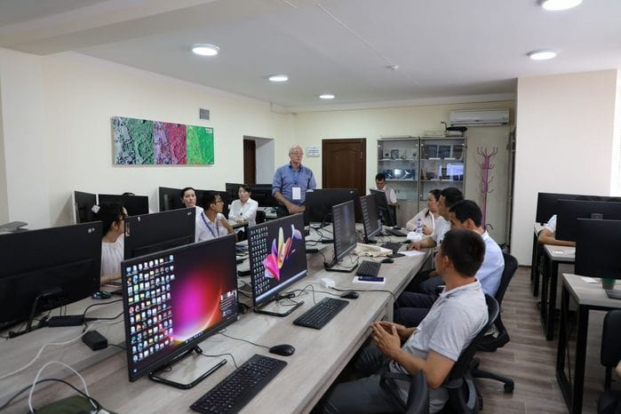

217 natija
"suv resurslari boshqaruvi" uchun

Orol dengizi havzasida barqaror sug'orish tizimlari uchun ma'lumotlarga asoslangan qaror qabul qilish
...mintaqa suv resurslari boshqaruvi uchun yangi modelni taklif etadi. Sun'iy yo'ldosh ma'lumotlari va IoT...
D. Egamberdiyeva·147 iqtibos·2 348 yuklab olish

Amudaryo havzasida transchegaraviy suv boshqaruvi: 30 yillik tahlil
...mintaqaviy suv resurslari boshqaruvi bo'yicha 1995–2025 yillar oralig'idagi siyosat...
K. Akramov·89 iqtibos

Yosh tadqiqotchilar maktabi — iqlim moslashuvi va suv resurslari boshqaruvi
PhD darajasidagi 64 nafar tadqiqotchi uchun 5 kunlik intensiv ilmiy maktab. Suv resurslari...
RCGA · CAWa Project·Trening

Toshkentda yangi O'zbek-Xitoy qo'shma laboratoriyasi ochildi
Yangi markaz tuproq, o'g'it va suv resurslari bo'yicha integratsiyalashgan tadqiqotlar olib boradi...
Yuz.uz·3 min o'qish

2050 yilgacha Markaziy Osiyo iqlim stsenariylari va agrar moslashuv
Mintaqaviy iqlim modellari, suv balansi va resurslar boshqaruvi bo'yicha to'liq tahlil...
R. Boboqulov, A. Nazarov·203 iqtibos
...